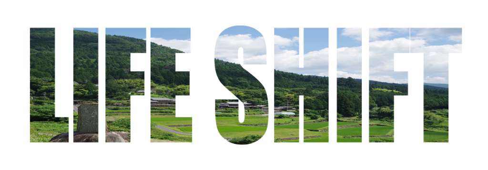

～お米作りを軸に「田舎で生きる」を実践する半年講座～
お米をつくる。
地域の人とつながる。
小さななりわいを考える。
移住のお金の現実を知る。
田んぼを持つまでのプロセスを学ぶ。
農ある暮らしの原型（プロトタイプ）を、
中野方という“風の谷”でつくる半年間。
中野方での暮らしの実録
中野方、風の谷の风景
中野方は、空き家が多いわけでも、便利な町でもありません。
けれど、人のつながりが濃く、暮らしの技が今も息づき、
“遊び”が生きる力へと変わる谷です。
「農 × 暮らし × なりわい × 地域の未来」を
まるごと体験しながら、
田舎で生きるための“自分だけの暮らしの原型”を
半年かけて耕す講座をつくりました。
田舎は、自然が豊かで人があたたかい場所。
でもそれだけでは、暮らしは続きません。
仕事はどうする？
収入は？
ご近所との距離感は？
自分は何で生きていく？
憧れの前に、現実を知ること。
そして、“覚悟”ではなく“納得”で選ぶこと。
この講座は、
理想だけでなく、
田舎で生きるための土台を体感する時間です。
講師：伊藤 洋志さん
そんな方のための講座です。
10名程度（少人数制）
3月〜4月
5月（田植えから始まります）
通し参加 10,000円
小学生以下無料 / 単発参加 3,000円
※補助金活用予定のため、実費相当のご負担となります。
全5回のうち、4回以上参加できる方
※継続して関わることで、学びと気づきが深まります。
全5回連続講座
田植え体験を起点に、「農 × 暮らし × なりわい × 地域の未来」を体感しながら、
自分なりの“田舎で生きる原型”を描いていきます。